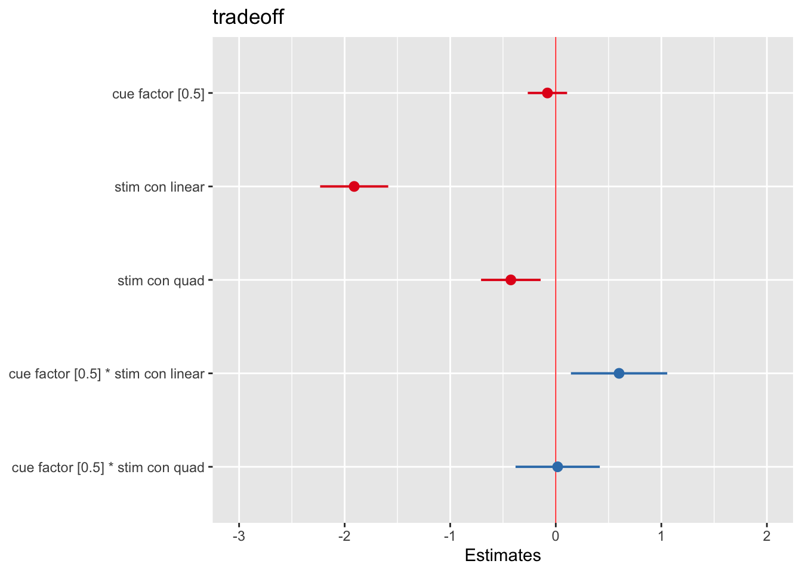
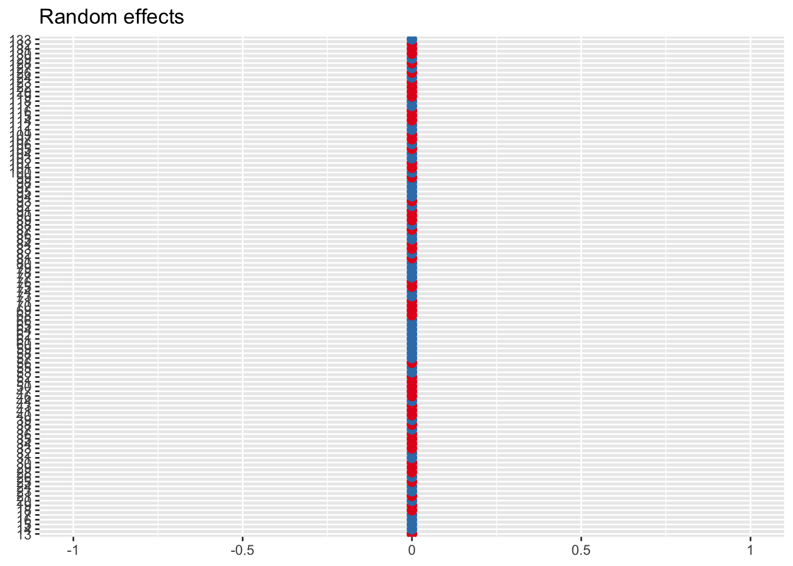

Chapter 10 cognitive RT tradeoff ~ cue * stim (withinsubject)
date: '2022-07-17'10.1 Overview
The purpose of this notebook is to example within subject analysis. More specifically, we want to compare diverging methods and check if the end results are identical.
10.2 Why use multilevel models?
- content copied from http://www.bristol.ac.uk/cmm/learning/multilevel-models/what-why.html
There are a number of reasons for using multilevel models:
Correct inferences: Traditional multiple regression techniques treat the units of analysis as independent observations. One consequence of failing to recognise hierarchical structures is that standard errors of regression coefficients will be underestimated, leading to an overstatement of statistical significance. Standard errors for the coefficients of higher-level predictor variables will be the most affected by ignoring grouping.
Substantive interest in group effects: In many situations a key research question concerns the extent of grouping in individual outcomes, and the identification of ‘outlying’ groups. In evaluations of school performance, for example, interest centres on obtaining ‘value-added’ school effects on pupil attainment. Such effects correspond to school-level residuals in a multilevel model which adjusts for prior attainment.
Estimating group effects simultaneously with the effects of group-level predictors: An alternative way to allow for group effects is to include dummy variables for groups in a traditional (ordinary least squares) regression model. Such a model is called an analysis of variance or fixed effects model. In many cases there will be predictors defined at the group level, eg type of school (mixed vs. single sex). In a fixed effects model, the effects of group-level predictors are confounded with the effects of the group dummies, ie it is not possible to separate out effects due to observed and unobserved group characteristics. In a multilevel (random effects) model, the effects of both types of variable can be estimated.
Inference to a population of groups: In a multilevel model the groups in the sample are treated as a random sample from a population of groups. Using a fixed effects model, inferences cannot be made beyond the groups in the sample.
load libraries
10.3 Terminology
- factor
-
In experimental designs, factor is the equivalent of independent variable. In R, one can factorize a categorical variable by using the
factorfunction. Thereby we interchangeably use the term factor in lieu of independent variable.From this, the term
factorial designoriginates. - level
-
within each independent variable, a researcher may determine different levels. Since the purpose of linear models is to compare at least one condition to another, a factor contains more than one level.
- group variable
-
Unit of analysis. In most fMRI experiments that collect individual data, the group variable would be the individual participant. However, in other research questions, the group variable could easily be more than one individual. For instance, a dyad of participants that carry out conversations, multiple patients that see an identical doctor, a classroom full of individuals, or voting districts could serve as a grouping variable, depending on the research question.
factor: group
10.4 Model versions
Method 1: repeated measures and one-sample t-tests
- Data Matrix: Wide form
- row (83 subject)
- column (6 conditions: highCue x highStim, highCue x medStim, highCue x lowStim, lowCue x highStim,lowCue x medStim, lowCue x lowStim)
- Model: Use “lm”. One-sample t-test
- Effect size (cohen’s d): mean / sd (intersubject slope) > use degrees of freedom.
Method 1-1: repeated measures using **aov** in R
repeated measures in R using aov link https://www.statology.org/repeated-measures-anova-in-r/#:~:text=A%20repeated%20measures%20ANOVA%20is,show%20up%20in%20each%20group using aov, includes subject as error term
Method 2: multilevel modeling using **glmfit_multilevel** in matlab
- Data Matrix: Long form
- Cell (1x83 subject)
double (1x6 condition) (6 conditions: highCuehighStim, highCuemedStim, highCuelowStim, lowCuehighStim,lowCuemedStim, lowCuelowStim)
e.g. X_factor{1,83}(6)
- Cell (1x83 subject)
- Model: Use “glmfit_multilevel<https://github.com/canlab/CanlabCore/blob/master/CanlabCore/Statistics_tools/glmfit_multilevel.m>”
- Effect size: output from the Stats variable.
- TODO: need to identify if multiple factors are allowed as input
Method 3: multilevel modeling using **lmer** in R
- Data Matrix: Long form
- Row (498: 83 subject * 2 cue * 3 stimulus intensity)
- Columns (4: subject, cue type, stimulus intensity type, tradeoff)
- Model: Use “lmer” multilevel-modeling
- grouping variable: subjects (i.e. src_subject_id)
- fixed effects - cue (2 levels, contrast-coded [high, low: 1, -1]) - stim_linear (3 levels, [low, med, high: -1, 0, 1]) - stim_quadratic (3 levels, [low, med, high: -1, 2, -1])
- random effects - cue - stim_linear - cue*stim_linear
- NOTE: due to convergence failure, cue*stim_quadratic term was removed
- Effect size (cohen’s d): beta_coefficient/ sqrt(sum of all random variance)
load data and combine participant data
main_dir = dirname(dirname(getwd()))
datadir = file.path(main_dir, 'data', 'beh', 'beh02_preproc')
# parameters _____________________________________ # nolint
subject_varkey <- "src_subject_id"
iv <- "param_cue_type"
dv <- "event03_RT"
dv_keyword <- "RT"
xlab <- ""
taskname <- "cognitive"
ylab <- "ratings (degree)"
subject <- "subject"
exclude <- "sub-0999|sub-0001|sub-0002|sub-0003|sub-0004|sub-0005|sub-0006|sub-0007|sub-0008|sub-0009|sub-0010|sub-0011"
# load data _____________________________________
data <- load_task_social_df(datadir, taskname = taskname, subject_varkey = subject_varkey, iv = iv, exclude = exclude)
data$event03_RT <- data$event03_stimulusC_reseponseonset - data$event03_stimulus_displayonset
# data['event03_RT'], data.event03_RT - pandas
analysis_dir <- file.path(main_dir, "analysis", "mixedeffect", "model06_iv-cue-stim_dv-tradeoff_withinsubject", as.character(Sys.Date()))
dir.create(analysis_dir, showWarnings = FALSE, recursive = TRUE)
data$event03_response_samediff <- mapvalues(data$event03_stimulusC_response,
from = c(1, 2),
to = c("diff", "same"))
data$event03_correct <- ifelse(data$event03_C_stim_match == data$event03_response_samediff, 1, ifelse(data$event03_C_stim_match != data$event03_response_samediff, 0, "NA"))# 1) calculate accuracy of cognitive mental rotation task
data_perf <- data %>%
group_by(src_subject_id, param_cue_type, param_stimulus_type) %>%
dplyr::summarise(
accuracy = sum(as.numeric(event03_correct), na.rm = TRUE),
count = sum(!is.na(as.numeric(event03_correct))),
.groups = 'drop') %>%
ungroup() %>%
group_by(src_subject_id) %>%
dplyr::mutate(zscore_acc = as.numeric(scale(accuracy)))
# 2) calculate average RT within subject, for each condition type
data_RT <- data %>%
group_by(src_subject_id, param_cue_type, param_stimulus_type) %>%
dplyr::summarise(subjectwise_RT = mean(as.numeric(event03_RT), na.rm = TRUE), .groups = 'drop') %>%
ungroup() %>%
group_by(src_subject_id) %>%
dplyr::mutate(zscore_RT = as.numeric(scale(subjectwise_RT)))
# 3) calculate tradeoff based on RT and accuracy
df_tradeoff = merge(x = data_RT, y = data_perf, by = c("src_subject_id", "param_cue_type", "param_stimulus_type"), all = TRUE)
df_tradeoff$tradeoff = df_tradeoff$zscore_acc - df_tradeoff$zscore_RTThis is the data that we will use
## src_subject_id param_cue_type param_stimulus_type subjectwise_RT zscore_RT
## 1 100 high_cue high_stim 3.461085 0.0977099
## 2 100 high_cue low_stim 3.697358 0.9879113
## 3 100 high_cue med_stim 3.518048 0.3123281
## 4 100 low_cue high_stim 3.630573 0.7362880
## 5 100 low_cue low_stim 3.348520 -0.3263990
## 6 100 low_cue med_stim 2.955323 -1.8078382
## accuracy count zscore_acc tradeoff condition con_num
## 1 8 10 0.000000 -0.0977099 high_cue_high_stim 1
## 2 10 10 1.118034 0.1301227 high_cue_low_stim 2
## 3 6 10 -1.118034 -1.4303621 high_cue_med_stim 3
## 4 8 9 0.000000 -0.7362880 low_cue_high_stim 4
## 5 10 10 1.118034 1.4444330 low_cue_low_stim 5
## 6 6 9 -1.118034 0.6898042 low_cue_med_stim 610.5 Method 1 one-sample t
Method 1 one-sample t
- Data Matrix: Wide form
- row (83 subject)
- column (6 conditions: highCue x highStim, highCue x medStim, highCue x lowStim, lowCue x highStim,lowCue x medStim, lowCue x lowStim)
- Model: Use “lm”. One-sample t-test
- Effect size (cohen’s d): mean / sd (intersubject slope) > use degrees of freedom.
w1.perf = df_tradeoff[c("src_subject_id","param_cue_type", "param_stimulus_type","zscore_acc" )] %>%
pivot_wider(names_from = c(param_cue_type, param_stimulus_type), values_from = zscore_acc)
w1.rt = df_tradeoff[c("src_subject_id","param_cue_type", "param_stimulus_type","zscore_RT" )] %>%
pivot_wider(names_from = c(param_cue_type, param_stimulus_type), values_from = zscore_RT)
w1.tradeoff = df_tradeoff[c("src_subject_id","param_cue_type", "param_stimulus_type","tradeoff" )] %>%
pivot_wider(names_from = c(param_cue_type, param_stimulus_type), values_from = tradeoff) # library(effectsize)
# eta_squared(t.int, partial = FALSE)Creating within subject effect Each participants data point is transformed from long-to-wide format. Rows represent participants; columns represent conditions. In our case, we have a 2x3 design. Therefore, we have 6 columns. By linear combining these 6 combination with contrast-code weights, we can obtain one column, that is the cue effect. Ultimately, we test whether this cue effect is different from zero, using a one sample t-test.
1) cue effect The cue effect is not significant, b = -0.0987 , se = 0.1798, t(82) = -0.549, p = 0.585
# average
# cue effect
w1.tradeoff$cue_effect = (+1/2) * w1.tradeoff$high_cue_high_stim +
(+1/2) * w1.tradeoff$high_cue_med_stim +
(+1/2) * w1.tradeoff$high_cue_low_stim +
(-1/2) * w1.tradeoff$low_cue_high_stim +
(-1/2) * w1.tradeoff$low_cue_med_stim +
(-1/2) * w1.tradeoff$low_cue_low_stim
tradeoff.cue = lm(w1.tradeoff$cue_effect ~ 1)
t.test(w1.tradeoff$cue_effect, mu = 0, alternative = "two.sided")##
## One Sample t-test
##
## data: w1.tradeoff$cue_effect
## t = -0.76582, df = 104, p-value = 0.4455
## alternative hypothesis: true mean is not equal to 0
## 95 percent confidence interval:
## -0.4248327 0.1881188
## sample estimates:
## mean of x
## -0.118357# output of cue effect
summary(tradeoff.cue)##
## Call:
## lm(formula = w1.tradeoff$cue_effect ~ 1)
##
## Residuals:
## Min 1Q Median 3Q Max
## -3.9035 -1.2443 -0.0625 1.3321 3.3766
##
## Coefficients:
## Estimate Std. Error t value Pr(>|t|)
## (Intercept) -0.1184 0.1545 -0.766 0.446
##
## Residual standard error: 1.584 on 104 degrees of freedomWe sill continue to calculate this within subject effect for the stimulus and interaction contrast.
2) linear stimulus effect The linear stimulus effect is significant, b = -0.8343, se = 0.0787, t(82) = -10.6, p < 2e-16 ***
# linear stim effect
w1.tradeoff$lin_stim_effect =
(+1/4) * w1.tradeoff$high_cue_high_stim +
(0) * w1.tradeoff$high_cue_med_stim +
(-1/4) * w1.tradeoff$high_cue_low_stim +
(+1/4) * w1.tradeoff$low_cue_high_stim +
(0) * w1.tradeoff$low_cue_med_stim +
(-1/4) * w1.tradeoff$low_cue_low_stim
tradeoff.lin_stim = lm(w1.tradeoff$lin_stim_effect ~ 1)
# output of stimulus linear contrast effect
summary(tradeoff.lin_stim)##
## Call:
## lm(formula = w1.tradeoff$lin_stim_effect ~ 1)
##
## Residuals:
## Min 1Q Median 3Q Max
## -1.08946 -0.58857 -0.05204 0.42664 2.14818
##
## Coefficients:
## Estimate Std. Error t value Pr(>|t|)
## (Intercept) -0.80490 0.07042 -11.43 <2e-16 ***
## ---
## Signif. codes: 0 '***' 0.001 '**' 0.01 '*' 0.05 '.' 0.1 ' ' 1
##
## Residual standard error: 0.7216 on 104 degrees of freedom3) quadratic stimulus effect The quadratic stimulus effect is significant, b = -0.31599, se = 0.07563, t(82) = -4.178, p < 2e-16 ***
# quadratic stimulus effect
w1.tradeoff$quad_stim_effect =
(-1/6) * w1.tradeoff$high_cue_high_stim +
(2/6) * w1.tradeoff$high_cue_med_stim +
(-1/6) * w1.tradeoff$high_cue_low_stim +
(-1/6) * w1.tradeoff$low_cue_high_stim +
(2/6) * w1.tradeoff$low_cue_med_stim +
(-1/6) * w1.tradeoff$low_cue_low_stim
tradeoff.quad_stim = lm(w1.tradeoff$quad_stim_effect ~ 1)
summary(tradeoff.quad_stim)##
## Call:
## lm(formula = w1.tradeoff$quad_stim_effect ~ 1)
##
## Residuals:
## Min 1Q Median 3Q Max
## -1.65581 -0.55973 0.03071 0.49762 1.89672
##
## Coefficients:
## Estimate Std. Error t value Pr(>|t|)
## (Intercept) -0.27494 0.07036 -3.908 0.000166 ***
## ---
## Signif. codes: 0 '***' 0.001 '**' 0.01 '*' 0.05 '.' 0.1 ' ' 1
##
## Residual standard error: 0.721 on 104 degrees of freedom4) interaction effect The interaction is significant, b = 0.19646, se = 0.07542, t(82) = 2.605, p = 0.0109 **
# interaction
w1.tradeoff$interaction =
(+1/4) * w1.tradeoff$high_cue_high_stim +
(0) * w1.tradeoff$high_cue_med_stim +
(-1/4) * w1.tradeoff$high_cue_low_stim +
(-1/4) * w1.tradeoff$low_cue_high_stim +
(0/4) * w1.tradeoff$low_cue_med_stim +
(+1/4) * w1.tradeoff$low_cue_low_stim
tradeoff.int = lm(w1.tradeoff$interaction ~ 1)
summary(tradeoff.int)##
## Call:
## lm(formula = w1.tradeoff$interaction ~ 1)
##
## Residuals:
## Min 1Q Median 3Q Max
## -1.52806 -0.38884 -0.02102 0.39899 1.74262
##
## Coefficients:
## Estimate Std. Error t value Pr(>|t|)
## (Intercept) 0.14994 0.06445 2.327 0.0219 *
## ---
## Signif. codes: 0 '***' 0.001 '**' 0.01 '*' 0.05 '.' 0.1 ' ' 1
##
## Residual standard error: 0.6604 on 104 degrees of freedomMethod 1 effectsize
# tradeoff$cue_effect:
cohens_d = -0.1974/(0.3597*sqrt(82))
cat(paste("\ncohen's d of the cue effect: -0.1974/(0.3597*sqrt(82)) = ", cohens_d))##
## cohen's d of the cue effect: -0.1974/(0.3597*sqrt(82)) = -0.0606037899560042# tradeoff lin_effect
cat(paste("\ncohen's d of the linear stimulus intensity effect: ", -3.3371/(0.3148*sqrt(82))))##
## cohen's d of the linear stimulus intensity effect: -1.17065135217398# tradeoff stim_quad_effect
cat(paste("\ncohen's d of the quadratic stimulus intensity effect: ",-1.8960/(0.4538*sqrt(82))))##
## cohen's d of the quadratic stimulus intensity effect: -0.461388658964101# tradeoff interaction_effect
cat(paste("\ncohen's d of the quadratic stimulus intensity effect: ",
0.7858/(0.3017*sqrt(82))))##
## cohen's d of the quadratic stimulus intensity effect: 0.287627090452815cohens_f = as.numeric(cohens_d)*0.5
cat(paste("\ncohen's f of the cue effect: 1/2 * cohen's d = ",as.numeric(cohens_d)*0.5 ))##
## cohen's f of the cue effect: 1/2 * cohen's d = -0.0303018949780021- Keep note of this Cohen’s f value, -0.03. It will appear in the next model as well.
10.6 Method 1-1 aov
contrast-coding for aov modeling (code-hidden)
#contrast code 1 linear
df_tradeoff$stim_con_linear[df_tradeoff$param_stimulus_type == "low_stim"] <- -0.5
df_tradeoff$stim_con_linear[df_tradeoff$param_stimulus_type == "med_stim"] <- 0
df_tradeoff$stim_con_linear[df_tradeoff$param_stimulus_type == "high_stim"] <- 0.5
# contrast code 2 quadratic
df_tradeoff$stim_con_quad[df_tradeoff$param_stimulus_type == "low_stim"] <- -0.33
df_tradeoff$stim_con_quad[df_tradeoff$param_stimulus_type == "med_stim"] <- 0.66
df_tradeoff$stim_con_quad[df_tradeoff$param_stimulus_type == "high_stim"] <- -0.33
# social cue contrast
df_tradeoff$social_cue[df_tradeoff$param_cue_type == 'low_cue'] <- -0.5 # social influence task
df_tradeoff$social_cue[df_tradeoff$param_cue_type == 'high_cue'] <- 0.5 # no influence task
df_tradeoff$cue_factor = factor(df_tradeoff$param_cue_type)model_1_1 <- aov(tradeoff~factor(param_cue_type)*factor(param_stimulus_type)+Error(factor(src_subject_id)), data = df_tradeoff)
summary(model_1_1)##
## Error: factor(src_subject_id)
## Df Sum Sq Mean Sq F value Pr(>F)
## Residuals 104 9.657e-28 9.285e-30
##
## Error: Within
## Df Sum Sq Mean Sq F value
## factor(param_cue_type) 1 1.0 0.98 0.577
## factor(param_stimulus_type) 2 295.9 147.96 87.025
## factor(param_cue_type):factor(param_stimulus_type) 2 9.5 4.73 2.780
## Residuals 520 884.1 1.70
## Pr(>F)
## factor(param_cue_type) 0.4479
## factor(param_stimulus_type) <2e-16 ***
## factor(param_cue_type):factor(param_stimulus_type) 0.0629 .
## Residuals
## ---
## Signif. codes: 0 '***' 0.001 '**' 0.01 '*' 0.05 '.' 0.1 ' ' 1#knitr::kable(nice(model_1_1))
coefficients(model_1_1)## (Intercept) :
## (Intercept)
## -1.022873e-16
##
## factor(src_subject_id) :
## numeric(0)
##
## Within :
## factor(param_cue_type)low_cue
## -0.2150776
## factor(param_stimulus_type)low_stim
## 1.3099065
## factor(param_stimulus_type)med_stim
## 0.2513999
## factor(param_cue_type)low_cue:factor(param_stimulus_type)low_stim
## 0.5997752
## factor(param_cue_type)low_cue:factor(param_stimulus_type)med_stim
## 0.2821716Method 1-1 effectsize
Note that the effectsize of the cue effect (“cue_factor”) is 5.64e-04. We’ll check that this is equivalent to the effectsize estimate in the next model
cohens_f(model_1_1)## # Effect Size for ANOVA (Type I)
##
## Group | Parameter | Cohen's f (partial) | 95% CI
## -----------------------------------------------------------------------------------------------
## Within | factor(param_cue_type) | 0.03 | [0.00, Inf]
## Within | factor(param_stimulus_type) | 0.58 | [0.50, Inf]
## Within | factor(param_cue_type):factor(param_stimulus_type) | 0.10 | [0.00, Inf]
##
## - One-sided CIs: upper bound fixed at [Inf].eta_squared(model_1_1, partial = FALSE)## # Effect Size for ANOVA (Type I)
##
## Group | Parameter | Eta2 | 95% CI
## -------------------------------------------------------------------------------------
## Within | factor(param_cue_type) | 8.24e-04 | [0.00, 1.00]
## Within | factor(param_stimulus_type) | 0.25 | [0.20, 1.00]
## Within | factor(param_cue_type):factor(param_stimulus_type) | 7.94e-03 | [0.00, 1.00]
##
## - One-sided CIs: upper bound fixed at [1.00].10.7 Method 1-2 aov contrast-coding
# because the coefficients don't match, instead of adding one factor, I plan to contrast code each factor and include it in model
model_1_2 <- aov(tradeoff ~ 1+ cue_factor + stim_con_linear + stim_con_quad + cue_factor*stim_con_linear + cue_factor*stim_con_quad + +Error(factor(src_subject_id)), data = df_tradeoff)
summary(model_1_2)##
## Error: factor(src_subject_id)
## Df Sum Sq Mean Sq F value Pr(>F)
## Residuals 104 9.657e-28 9.285e-30
##
## Error: Within
## Df Sum Sq Mean Sq F value Pr(>F)
## cue_factor 1 1.0 0.98 0.577 0.447927
## stim_con_linear 1 272.1 272.10 160.045 < 2e-16 ***
## stim_con_quad 1 23.8 23.81 14.006 0.000203 ***
## cue_factor:stim_con_linear 1 9.4 9.44 5.554 0.018807 *
## cue_factor:stim_con_quad 1 0.0 0.01 0.006 0.935965
## Residuals 520 884.1 1.70
## ---
## Signif. codes: 0 '***' 0.001 '**' 0.01 '*' 0.05 '.' 0.1 ' ' 1coefficients(model_1_2)## (Intercept) :
## (Intercept)
## -1.022873e-16
##
## factor(src_subject_id) :
## numeric(0)
##
## Within :
## cue_factorlow_cue stim_con_linear
## 0.07890465 -1.30990652
## stim_con_quad cue_factorlow_cue:stim_con_linear
## -0.40762969 -0.59977524
## cue_factorlow_cue:stim_con_quad
## -0.01789492Method 1-2 effectsize
Note that the effectsize of the cue effect (“cue_factor”) is 5.64e-04. This is identical to the effect size of the cue effect from Method 1-1. For the other estimates, we can’t really compare, because the estimates arre collapsed into omnibus models in Method 1-1, where as Method 1-2 uses orthogonalized contrast codes, parsing out the stimulus effect into two contrasts.
cohens_f(model_1_2)## # Effect Size for ANOVA (Type I)
##
## Group | Parameter | Cohen's f (partial) | 95% CI
## -----------------------------------------------------------------------
## Within | cue_factor | 0.03 | [0.00, Inf]
## Within | stim_con_linear | 0.55 | [0.48, Inf]
## Within | stim_con_quad | 0.16 | [0.09, Inf]
## Within | cue_factor:stim_con_linear | 0.10 | [0.03, Inf]
## Within | cue_factor:stim_con_quad | 3.52e-03 | [0.00, Inf]
##
## - One-sided CIs: upper bound fixed at [Inf].eta_squared(model_1_2, partial = FALSE)## # Effect Size for ANOVA (Type I)
##
## Group | Parameter | Eta2 | 95% CI
## -------------------------------------------------------------
## Within | cue_factor | 8.24e-04 | [0.00, 1.00]
## Within | stim_con_linear | 0.23 | [0.18, 1.00]
## Within | stim_con_quad | 0.02 | [0.00, 1.00]
## Within | cue_factor:stim_con_linear | 7.93e-03 | [0.00, 1.00]
## Within | cue_factor:stim_con_quad | 9.23e-06 | [0.00, 1.00]
##
## - One-sided CIs: upper bound fixed at [1.00].UPDATE OR DELETE
y_{ij} = \mu + \beta_{j} + \b_{i} + \epsilon_{ij}
* y_{ij} is the response value for the ith individual at the jth period (day)Within_Data.BarGraph<-ggplot(df_tradeoff, aes(param_stimulus_type, tradeoff, fill=param_stimulus_type)) +
geom_bar(stat="summary", fun.y="mean") +
scale_y_continuous() + # breaks = seq(0, 101, 10), limits =c(0,101)
facet_grid(.~param_cue_type) +
xlab("Cue") + ylab("Tradeoff") +
scale_fill_brewer(palette="Dark2") +
theme(legend.position="none")## Warning in geom_bar(stat = "summary", fun.y = "mean"): Ignoring unknown
## parameters: `fun.y`Within_Data.BarGraph## No summary function supplied, defaulting to `mean_se()`
## No summary function supplied, defaulting to `mean_se()`
10.8 Method 1 effectsize
Method 1 effectsize estimate (one-sample t-test)
# tradeoff$cue_effect:
cohens_d = -0.1974/(0.3597*sqrt(82))
cat(paste("\ncohen's d of the cue effect: -0.1974/(0.3597*sqrt(82)) = ", cohens_d))##
## cohen's d of the cue effect: -0.1974/(0.3597*sqrt(82)) = -0.0606037899560042# tradeoff lin_effect
cat(paste("\ncohen's d of the linear stimulus intensity effect: ", -3.3371/(0.3148*sqrt(82))))##
## cohen's d of the linear stimulus intensity effect: -1.17065135217398# tradeoff stim_quad_effect
cat(paste("\ncohen's d of the quadratic stimulus intensity effect: ",-1.8960/(0.4538*sqrt(82))))##
## cohen's d of the quadratic stimulus intensity effect: -0.461388658964101# tradeoff interaction_effect
cat(paste("\ncohen's d of the quadratic stimulus intensity effect: ",
0.7858/(0.3017*sqrt(82))))##
## cohen's d of the quadratic stimulus intensity effect: 0.287627090452815Method 1-1 effectsize estimate (one-sample t-test)
cohens_f(model_1_1)## # Effect Size for ANOVA (Type I)
##
## Group | Parameter | Cohen's f (partial) | 95% CI
## -----------------------------------------------------------------------------------------------
## Within | factor(param_cue_type) | 0.03 | [0.00, Inf]
## Within | factor(param_stimulus_type) | 0.58 | [0.50, Inf]
## Within | factor(param_cue_type):factor(param_stimulus_type) | 0.10 | [0.00, Inf]
##
## - One-sided CIs: upper bound fixed at [Inf].eta_squared(model_1_1, partial = FALSE)## # Effect Size for ANOVA (Type I)
##
## Group | Parameter | Eta2 | 95% CI
## -------------------------------------------------------------------------------------
## Within | factor(param_cue_type) | 8.24e-04 | [0.00, 1.00]
## Within | factor(param_stimulus_type) | 0.25 | [0.20, 1.00]
## Within | factor(param_cue_type):factor(param_stimulus_type) | 7.94e-03 | [0.00, 1.00]
##
## - One-sided CIs: upper bound fixed at [1.00].Method 1-2 effectsize estimate (one-sample t-test)
cohens_f(model_1_2)## # Effect Size for ANOVA (Type I)
##
## Group | Parameter | Cohen's f (partial) | 95% CI
## -----------------------------------------------------------------------
## Within | cue_factor | 0.03 | [0.00, Inf]
## Within | stim_con_linear | 0.55 | [0.48, Inf]
## Within | stim_con_quad | 0.16 | [0.09, Inf]
## Within | cue_factor:stim_con_linear | 0.10 | [0.03, Inf]
## Within | cue_factor:stim_con_quad | 3.52e-03 | [0.00, Inf]
##
## - One-sided CIs: upper bound fixed at [Inf].eta_squared(model_1_2, partial = FALSE)## # Effect Size for ANOVA (Type I)
##
## Group | Parameter | Eta2 | 95% CI
## -------------------------------------------------------------
## Within | cue_factor | 8.24e-04 | [0.00, 1.00]
## Within | stim_con_linear | 0.23 | [0.18, 1.00]
## Within | stim_con_quad | 0.02 | [0.00, 1.00]
## Within | cue_factor:stim_con_linear | 7.93e-03 | [0.00, 1.00]
## Within | cue_factor:stim_con_quad | 9.23e-06 | [0.00, 1.00]
##
## - One-sided CIs: upper bound fixed at [1.00].Note that the effectsize of the cue effect (“cue_factor”) is 5.64e-04. We’ll check that this is equivalent to the effectsize estimate in the next model
10.9 Method 2 matlab
Method 2 matlab
Data Matrix: Long form
- row (83 subject) x column (6 conditions: highCuehighStim, highCuemedStim, highCuelowStim, lowCuehighStim,lowCuemedStim, lowCuelowStim)
Model: Use “lm”. One-sample t-test
Effect size (cohen’s d): mean / sd (intersubject slope) > use degrees of freedom.
See function help here: https://canlabcore.readthedocs.io/_/downloads/en/latest/pdf/
Question ::How do I indicate that that is a 2 factor dataset?
10.10 Method 3 multilevel modeling
- Data Matrix: Long form
- Row (498: 83 subject * 2 cue * 3 stimulus intensity)
- Columns (4: subject, cue type, stimulus intensity type, tradeoff)
- Model: Use “lmer” multilevel-modeling
- grouping variable: subjects (i.e. src_subject_id)
- fixed effects - cue (2 levels, contrast-coded [high, low: 1, -1]) - stim_linear (3 levels, [low, med, high: -1, 0, 1]) - stim_quadratic (3 levels, [low, med, high: -1, 2, -1])
- random effects - cue - stim_linear - cue*stim_linear
- NOTE: due to convergence failure, cue*stim_quadratic term was removed
- Effect size (cohen’s d): beta_coefficient/ sqrt(sum of all random variance)
contrast-coding for multi-level modeling (code-hidden)
#contrast code 1 linear
df_tradeoff$stim_con_linear[df_tradeoff$param_stimulus_type == "low_stim"] <- -0.5
df_tradeoff$stim_con_linear[df_tradeoff$param_stimulus_type == "med_stim"] <- 0
df_tradeoff$stim_con_linear[df_tradeoff$param_stimulus_type == "high_stim"] <- 0.5
# contrast code 2 quadratic
df_tradeoff$stim_con_quad[df_tradeoff$param_stimulus_type == "low_stim"] <- -0.33
df_tradeoff$stim_con_quad[df_tradeoff$param_stimulus_type == "med_stim"] <- 0.66
df_tradeoff$stim_con_quad[df_tradeoff$param_stimulus_type == "high_stim"] <- -0.33
# social cue contrast
df_tradeoff$social_cue[df_tradeoff$param_cue_type == 'low_cue'] <- -0.5 # social influence task
df_tradeoff$social_cue[df_tradeoff$param_cue_type == 'high_cue'] <- 0.5 # no influence task
df_tradeoff$cue_factor = factor(df_tradeoff$social_cue)# parameters ___________________________________________________________________
df_tradeoff$subject = factor(df_tradeoff$src_subject_id)
subject_varkey <- "subject"
iv <- "cue_factor"
stim_con1 = "stim_con_linear"
stim_con2 = "stim_con_quad"
dv <- "tradeoff"
iv_keyword <- "cue-stim"
dv_keyword <- "tradeoff"
xlab <- ""
taskname <- "cognitive"
ylim = c(-1,1)Method-3 multi-level modeling using lmer
Method3_fullmodel = lmer(tradeoff ~ 1+ cue_factor + stim_con_linear + stim_con_quad + cue_factor:stim_con_linear + cue_factor:stim_con_quad + (1 |subject), data = df_tradeoff)## boundary (singular) fit: see help('isSingular')# output of Method-3 model
summary(Method3_fullmodel)## Linear mixed model fit by REML. t-tests use Satterthwaite's method [
## lmerModLmerTest]
## Formula: tradeoff ~ 1 + cue_factor + stim_con_linear + stim_con_quad +
## cue_factor:stim_con_linear + cue_factor:stim_con_quad + (1 | subject)
## Data: df_tradeoff
##
## REML criterion at convergence: 2016.1
##
## Scaled residuals:
## Min 1Q Median 3Q Max
## -2.60815 -0.68446 -0.00249 0.68088 3.12799
##
## Random effects:
## Groups Name Variance Std.Dev.
## subject (Intercept) 4.115e-31 6.415e-16
## Residual 1.417e+00 1.190e+00
## Number of obs: 630, groups: subject, 105
##
## Fixed effects:
## Estimate Std. Error df t value Pr(>|t|)
## (Intercept) 0.03945 0.06707 624.00000 0.588 0.55657
## cue_factor0.5 -0.07890 0.09484 624.00000 -0.832 0.40576
## stim_con_linear -1.90968 0.16428 624.00000 -11.625 < 2e-16
## stim_con_quad -0.42552 0.14370 624.00000 -2.961 0.00318
## cue_factor0.5:stim_con_linear 0.59978 0.23232 624.00000 2.582 0.01006
## cue_factor0.5:stim_con_quad 0.01789 0.20323 624.00000 0.088 0.92986
##
## (Intercept)
## cue_factor0.5
## stim_con_linear ***
## stim_con_quad **
## cue_factor0.5:stim_con_linear *
## cue_factor0.5:stim_con_quad
## ---
## Signif. codes: 0 '***' 0.001 '**' 0.01 '*' 0.05 '.' 0.1 ' ' 1
##
## Correlation of Fixed Effects:
## (Intr) c_f0.5 stm_cn_l stm_cn_q c_fctr0.5:stm_cn_l
## cue_fctr0.5 -0.707
## stim_cn_lnr 0.000 0.000
## stim_con_qd 0.000 0.000 0.000
## c_fctr0.5:stm_cn_l 0.000 0.000 -0.707 0.000
## c_fctr0.5:stm_cn_q 0.000 0.000 0.000 -0.707 0.000
## optimizer (nloptwrap) convergence code: 0 (OK)
## boundary (singular) fit: see help('isSingular')cooksd <- cooks.distance(Method3_fullmodel)
influential <- as.numeric(names(cooksd)[
(cooksd > (4 / as.numeric(length(unique(df_tradeoff$subject)))))])
data_screen <- df_tradeoff[-influential, ]
# reordering for plots _________________________________________________________
df_tradeoff$cue_name[df_tradeoff$param_cue_type == "high_cue"] <- "high cue"
df_tradeoff$cue_name[df_tradeoff$param_cue_type == "low_cue"] <- "low cue" # no influence task
df_tradeoff$stim_name[df_tradeoff$param_stimulus_type == "high_stim"] <- "high" # no influence task
df_tradeoff$stim_name[df_tradeoff$param_stimulus_type == "med_stim"] <- "med" # no influence task
df_tradeoff$stim_name[df_tradeoff$param_stimulus_type == "low_stim"] <- "low" # no influence task
df_tradeoff$stim_ordered <- factor(df_tradeoff$stim_name, levels=c("low", "med", "high"))
df_tradeoff$cue_ordered <- factor(df_tradeoff$cue_name, levels=c("low cue", "high cue"))
model_iv1 = "stim_ordered";model_iv2 = "cue_ordered"
# summary statistics for plots _________________________________________________
subjectwise <- meanSummary(df_tradeoff, c(subject, model_iv1, model_iv2), dv)
groupwise <- summarySEwithin(
data = subjectwise,
measurevar = "mean_per_sub", # variable created from above
withinvars = c(model_iv1, model_iv2), # iv
idvar = "subject"
)
subjectwise_mean <- "mean_per_sub";
group_mean <- "mean_per_sub_norm_mean"
se <- "se";
ggtitle <- paste(taskname, dv_keyword);
title <- paste(taskname, " - RT")
xlab <- "";
ylab <- "Reaction Time (s)";
w = 5; h = 3;
ylim = c(-5,5)
if (any(startsWith(dv_keyword, c("expect", "Expect")))) {
color <- c("#1B9E77", "#D95F02")
} else {
color <- c("#4575B4", "#D73027")
}
plot_savefname <- file.path(
analysis_dir,
paste("raincloud_task-", taskname,
"_iv-", iv_keyword,"_dv-", dv_keyword,
"_", as.character(Sys.Date()), ".png",
sep = ""
)
)
plot_rainclouds_twofactor(
subjectwise, groupwise,
model_iv1, model_iv2, subjectwise_mean, group_mean, se, subject,
ggtitle, title, xlab, ylab, task_name, ylim,
w, h, dv_keyword, color, plot_savefname
)## Warning in geom_line(data = subjectwise, aes(group = .data[[subject]], y
## = .data[[sub_mean]], : Ignoring unknown aesthetics: fill## Warning: Duplicated aesthetics after name standardisation: width## Warning: Using the `size` aesthietic with geom_polygon was deprecated in ggplot2 3.4.0.
## ℹ Please use the `linewidth` aesthetic instead.
fixef(Method3_fullmodel)## (Intercept) cue_factor0.5
## 0.03945233 -0.07890465
## stim_con_linear stim_con_quad
## -1.90968176 -0.42552462
## cue_factor0.5:stim_con_linear cue_factor0.5:stim_con_quad
## 0.59977524 0.01789492sd_raw_pre_t <- filter(df_tradeoff, cue_factor == "0.5") %>% summarise(s = sd(tradeoff)) %>% pull() # treatment baseline SD
sd_raw_pre_c <- filter(df_tradeoff, cue_factor == "-0.5") %>% summarise(s = sd(tradeoff)) %>% pull() # control baseline SD
sd_raw_pre_t## [1] 1.327879sd_raw_pre_c## [1] 1.422946# pooled PRE based on addition of two group conditions
sd_raw_pre_p <- sqrt((sd_raw_pre_c^2 + sd_raw_pre_t^2) / 2)
sd_raw_pre_p## [1] 1.376234Method 3 - Effect size estimates
d = estimate for fixed effect / (sqrt of sum of variances of random effects)
#https://www.journalofcognition.org/articles/10.5334/joc.10/
cat(paste("effectsize of lmer cue effect:",
0.0658 / sqrt(sum(0.0000,0.6077,1.1785,4.0424,0.8779))))## effectsize of lmer cue effect: 0.0254084357658397#0.0658 / sqrt(sum(0.1519,0.6078,2.0258,4.0428,0.8779))
#0.07/sqrt(sum(0.88,0.15,0.61,2.35,4.04,-1.00,0.37,-0.61))
#cohen_f = 0.02540844**2 / (2*2)
#cohen_fMethod 3 plotting
# library(sjPlot)
tab_model(Method3_fullmodel, p.val = "kr", show.df = TRUE)| tradeoff | ||||
|---|---|---|---|---|
| Predictors | Estimates | CI | p | df |
| (Intercept) | 0.04 | -0.09 – 0.17 | 0.557 | 346.67 |
| cue factor [0.5] | -0.08 | -0.27 – 0.11 | 0.406 | 520.00 |
| stim con linear | -1.91 | -2.23 – -1.59 | <0.001 | 520.00 |
| stim con quad | -0.43 | -0.71 – -0.14 | 0.003 | 520.00 |
|
cue factor [0.5] * stim con linear |
0.60 | 0.14 – 1.06 | 0.010 | 520.00 |
|
cue factor [0.5] * stim con quad |
0.02 | -0.38 – 0.42 | 0.930 | 520.00 |
| Random Effects | ||||
| σ2 | 1.42 | |||
| τ00 subject | 0.00 | |||
| N subject | 105 | |||
| Observations | 630 | |||
| Marginal R2 / Conditional R2 | 0.256 / NA | |||
plot_model(Method3_fullmodel, vline.color = "red")
# sort coefficients based on sizee
# plot_model(Method3_fullmodel, sort.est = TRUE)
# sjp.lmer(Method3_fullmodel, y.offset = .4)
plot_model(Method3_fullmodel, type = "re")
library(equatiomatic)
equatiomatic::extract_eq(Method3_fullmodel)\[ \begin{aligned} \operatorname{tradeoff}_{i} &\sim N \left(\mu, \sigma^2 \right) \\ \mu &=\alpha_{j[i]} + \beta_{1}(\operatorname{cue\_factor}_{\operatorname{0.5}}) + \beta_{2}(\operatorname{stim\_con\_linear}) + \beta_{3}(\operatorname{stim\_con\_quad}) + \beta_{4}(\operatorname{cue\_factor}_{\operatorname{0.5}} \times \operatorname{stim\_con\_linear}) + \beta_{5}(\operatorname{cue\_factor}_{\operatorname{0.5}} \times \operatorname{stim\_con\_quad}) \\ \alpha_{j} &\sim N \left(\mu_{\alpha_{j}}, \sigma^2_{\alpha_{j}} \right) \text{, for subject j = 1,} \dots \text{,J} \end{aligned} \]
–
Conclusion: Method 1 vs Method 3
- TODO: find a way to plot the results side-by-side
#sjPlot::sjt.lmer(Method3_fullmodel)Comparison between Method 1 and Method 3
While the coefficients vary from model to model, the t and p values are identical. Please note that the multilevel modeling does not include the quadratic stimulus x cue interaction term int he random slopes. Thereby the t values do differ in this case. TODO: expand and clean * update the beta coefficients
10.11 References
- multilevel modelling :: http://www.bristol.ac.uk/cmm/learning/multilevel-models/what-why.html
- multilevel modelling :: df https://bbolker.github.io/mixedmodels-misc/glmmFAQ.html#why-doesnt-lme4-display-denominator-degrees-of-freedomp-values-what-other-options-do-i-have
- multilevel modelling :: https://m-clark.github.io/
- Fixed vs random effects models for fMRI meta analysis
- https://rpsychologist.com/d3/ci/
- power analysis :: https://jakewestfall.shinyapps.io/crossedpower/
- power analysis in lmm glmm :: https://lkumle.github.io/power_notebooks/
- sjPlot :: https://github.com/strengejacke/sjPlot/issues/311
- sjPlot :: https://strengejacke.wordpress.com/2017/10/23/one-function-to-rule-them-all-visualization-of-regression-models-in-rstats-w-sjplot/
10.12 Other links
- Markdown formatting :: https://bookdown.org/yihui/rmarkdown-cookbook/embed-rmd.html
- CANlab glmfit_multilevel :: https://github.com/canlab/CanlabCore/blob/master/CanlabCore/Statistics_tools/glmfit_multilevel.m
- lmer results formatting :: http://www.strengejacke.de/sjPlot/articles/sjtlmer.html
- lmer results formatting :: https://stats.stackexchange.com/questions/173335/two-regression-outputs-side-by-side-in-r
- lmer and formulas :: https://rpubs.com/rslbliss/r_mlm_ws
- repeated measures using aov in R :: https://stackoverflow.com/questions/5694664/repeated-measures-within-subjects-anova-in-r
- Matthew McCurdy anova using afex in R https://ademos.people.uic.edu/Chapter21.html
- error term in repeated measures R :: https://stats.stackexchange.com/questions/247582/repeated-measures-anova-in-r-errorsubject-vs-errorsubject-day
- effect sizes in anova R :: https://cran.r-project.org/web/packages/effectsize/vignettes/anovaES.html